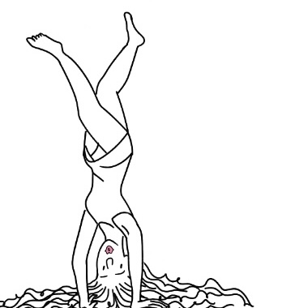
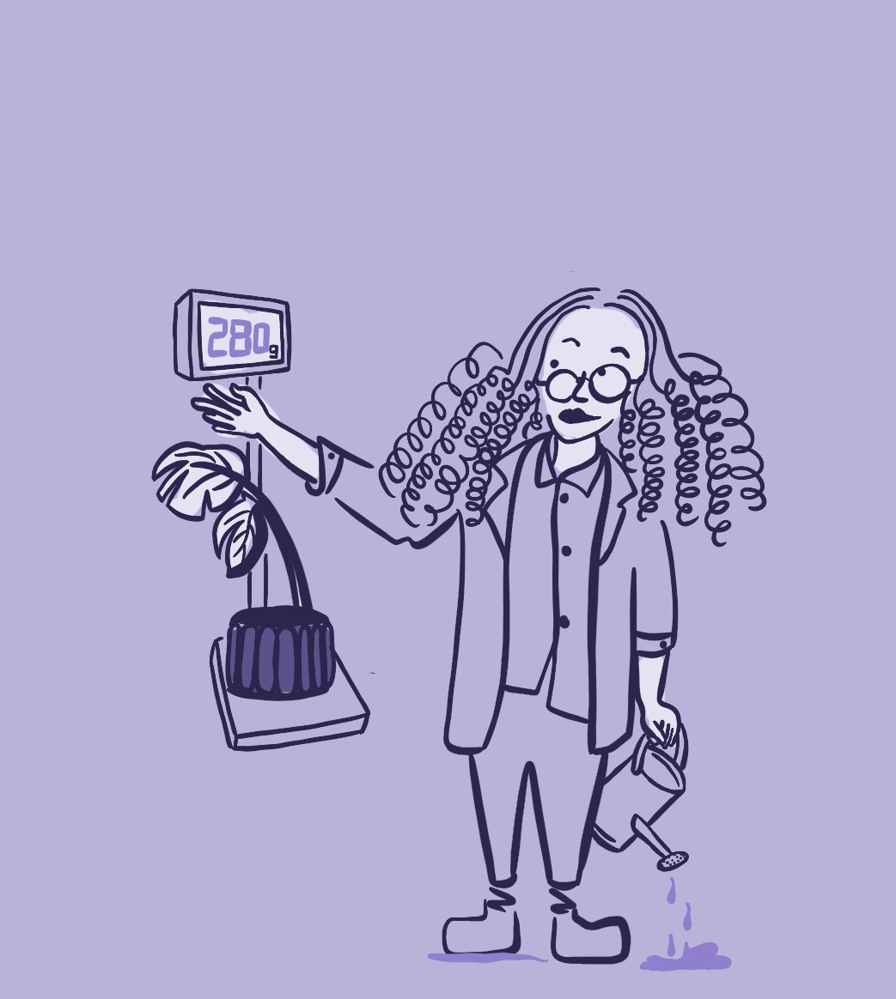

UX Research · Product Management · Tainan, Taiwan 使用者研究 · 產品管理 · 台灣台南
15 years of experience in hardware and software integration, from OEM companies to fitness app. I find what users actually need, not what they say they need. 15年硬體與軟體整合經驗，從代工廠到健身房應用軟體。我找出使用者真正需要的，而不只是他們說想要的。

About關於我
UX Researcher and Product Strategist based in Tainan, Taiwan. 15+ years of experience in hardware and software integration, from Pegatron and ASUS to iCHEF and iOGYM. 使用者研究員暨產品策略師，現居台灣台南。15年以上硬體與軟體整合工作經驗，歷經和碩、華碩、iCHEF，到iOGYM的產品與研究工作。
I care most about the moment when research reveals something everyone assumed was wrong. That's where the real work begins. Not the finding itself, but what happens after you have to convince people it's true. 我最在意的，是研究揭示出大家假設錯誤的那一刻。真正的工作從那裡開始，不只是找到答案，而是之後要讓人相信它是真的。

Outside work: I do headstands and grow plants. Both take a long time to show results. Both require showing up consistently even when nothing visible is changing. That turns out to be useful in research too. 工作之外：我練倒立、種植物。兩件事都需要很長時間才能看到成果，都需要在什麼都沒有明顯變化的時候還是持續出現。後來發現做研究也是一樣。
2024 – Now
UX Research · Product Strategy使用者研究 · 產品策略
iOGYM
2020 – 2022
Product Manager產品經理
La Fresh Information Corporation
2016 – 2019
Technical Support · Project Manager技術支援 / 專案經理
iCHEF Corporation
2012 – 2015
Software Product Specialist軟體產品專員
ASUSTeK Computer Inc.
2009 – 2012
Project Management Engineer專案管理工程師
Pegatron Corporation
Research研究能力
Qualitative research
Stakeholder interviews
Survey design
Usability testing
質性研究
利害關係人訪談
問卷設計
易用性測試
Strategy策略能力
Product roadmapping
B2B product thinking
Cross-functional coordination
Operational gap analysis
產品路線規劃
B2B產品思維
跨部門協調
營運缺口分析
Tools工具
Figma · Illustrator
SQL · Tableau
Jira · Notion · Asana
IoT · Hardware systemsIoT · 硬體系統
Case 01 · iOGYM · UX Research · 2024–Now
When everyone assumed users left because sensors were inaccurate, we kept digging. What research actually uncovered: the workout flow itself kept interrupting people. The app would remind you rest time was over, but you still had to tap Start again manually, otherwise nothing would be recorded. No training time, no reps, no eccentric or concentric data. Every set, every session. 當所有人都認為用戶流失是因為感應器不準確時，我們繼續深挖。研究真正揭露的是：訓練流程一直在打斷使用者。App雖然會提醒你休息結束了，但你還是要再手動按一次「開始」，不然當組的訓練時間、次數、向心和離心動作都不會被記錄。每一組，每一次都是如此。
The problem問題所在
What everyone assumed大家原本的假設
Sensor data was inaccurate. Users couldn't trust the equipment readings, so they stopped using the app. Development effort was focused on improving hardware precision. 感應器數據不準確，用戶不信任設備讀數，進而停止使用應用程式。開發資源集中在改善硬體精準度上。
What research revealed研究揭示的真相
The app flow was too cumbersome. Users had to open app → scan QR code → select exercise → rest → manually adjust reps and sets. Every single time. 應用程式流程太繁瑣。用戶每次都要：開啟app → 掃描QR碼 → 選擇動作 → 休息 → 手動調整次數和組數。每一次都要重複。
"The main reason users don't continue using the app is friction. Every time you have to scan, every time selecting an exercise takes too long, every time you have to remember your last weight... it's not the inaccurate reps that's driving people away." — research synthesis, April 2024 「使用者沒有持續使用的主要原因是：麻煩。每次都要掃描、每次選動作都很久、每次都要回想自己上次的重量⋯⋯而非表象的次數不準造成使用者沒有繼續使用下去。」 — 研究綜合結論，2024年4月
Research process研究過程
The questionnaire ran April 1–24, collecting 10+ new records that month. Interviews were conducted with coaches and athletes. Key observation: most users never looked at the screen mid-workout. They pocketed their phone and only checked it during rest breaks. 問卷調查從4月1日至24日進行，當月新增10筆以上紀錄。訪談對象包含教練和參賽選手。關鍵觀察：大部分使用者在運動時都不會看螢幕，他們把手機放進口袋，只在組間休息時才拿出來看。
Survey: friction findings問卷：操作摩擦力
"Too many exercises to choose from" and "no tutorial." StepX coaches said the repeated manual adjustments made them not want to keep using it. 「選擇動作太多不好挑選」和「沒有教學」。StepX教練大多反應因為麻煩（需要反覆調整）而不想持續使用。
Internal team feedback內部同仁回饋
"We're not used to staring at our phones during training, and we want to adjust the app as little as possible." 「大多都是沒有盯著手機看得習慣，並且希望越少去調整app越好。」
What coaches told us教練怎麼說
"I'm used to recording in Excel. The app feels cumbersome. Nike Run Club starts with one tap. That simplicity matters a lot to me." 「我習慣用Excel做重訓紀錄，覺得我們的APP有點麻煩。我有使用Nike Run Club做紀錄，覺得方便對我來說很重要，因為按一個鍵就可以開始了。」
Jackie, coachJackie，教練
"It's very annoying to re-select exercises every time. Why can't I just tap from my history and start training?" 「每次都要重新選擇很麻煩，為什麼不能從歷史資料點擊後就可以開始練。」
Oscar, coachOscar，教練
During a gym usability visit, Dellan immediately turned his phone face-down and put it in his pocket. Asin kept the phone to the side and only picked it up during rest breaks. 走健身易用性調查時，Dellan直接把手機螢幕關掉放進口袋。阿信也是把手機擺在一旁，組間休息時再拿起來看。
Gym usability observation健身房易用性觀察
Key insights關鍵洞察
01
Friction in the workout flow was the #1 churn driver. Not sensor accuracy.訓練流程中的摩擦感才是流失的主因，而非感應器精度。
02
Users don't look at their phones mid-workout. The app needs to work without constant interaction.使用者在訓練中不會看螢幕。App需要在無需持續互動的情況下運作。
03
Users wanted the app to remember their previous weights and exercises. Starting from scratch every time was the dealbreaker.用戶希望app能記住上次的重量與動作。每次從頭開始是最大的使用障礙。
Design decisions設計決策
Immediate priorities立即執行項目
Auto-remember last training weight. Simplify QR code flow. Allow editing past records. Background operation so screen doesn't need to stay on. 記錄上次訓練重量。簡化QR碼流程。可編輯修改訓練紀錄。App可背景作業，螢幕不需要持續開著。
Future vision: NFC flow未來願景：NFC流程
Like pressing play on YouTube: place phone on NFC rack, workout starts automatically. Zero manual steps to begin training. 像YouTube一樣，放上手機架就可以立刻運動，什麼都不用選。零手動步驟開始訓練。
Current flow現有流程
Open app → Scan QR → Select exercise → Rest → Return → Adjust reps/sets開啟app → 掃描QR碼 → 選擇動作 → 休息 → 返回 → 調整次數/組數
Target flow目標流程
Place phone on NFC rack → auto-start → train → adjust only during rest放上手機 → 自動開始 → 訓練 → 只在休息時調整
Watch product vision on YouTube ↗在YouTube觀看產品願景 ↗
Place phone on rack → training starts automatically. Zero friction.把手機放上架子 → 訓練自動開始。零摩擦。
Reflection反思
The biggest lesson was separating the assumed problem from the real one. Stakeholders were convinced the sensors were the issue. Going directly to users, through surveys, coach interviews, and gym usability visits, revealed that friction was in the journey, not the data. And once the finding was clear, the harder work was staying consistent about it: keeping the research visible, making sure it stayed part of how decisions got made. 最大的收穫是學會區分假設的問題和真實的問題。利害關係人深信感應器是問題所在，但透過問卷、教練訪談和健身房易用性觀察，發現摩擦感其實來自使用流程，而非數據本身。找到答案之後，更難的事情是讓它真正被看見：持續讓研究結果留在討論桌上，確保它成為產品決策的一部分。
Case 03 · iOGYM B2B Research · 2026 · In Progress
Gyms care most about one thing: member retention. And since iOGYM sells to gyms, not individual users, the research question expanded: how do people with different training experience actually stay motivated to keep going? 健身房最在意留客率。iOGYM的服務是賣給健身房，不是個別使用者。所以研究問題擴大為：不同重訓經驗的人，如何讓自己維持運動動力？
Why this research為什麼做這個研究
iOGYM's real customer is the gym, not the individual member. But our product was designed around individual tracking, so gyms couldn't see the value. They pay us to help them keep members. We weren't solving that. This research asks the underlying question: why do people actually keep training, and what helps gyms act on that before members leave?iOGYM真正的客戶是健身房，不是個別會員。但產品是圍繞個人追蹤設計的，所以健身房看不到價值。他們付錢是要我們幫他們留住會員，而我們沒有解決這個問題。這份研究問的是根本問題：人們究竟為什麼持續訓練，以及健身房如何在會員離開之前採取行動？
Who are we actually designing for?我們真正在為誰設計？
The gym owner who needs to retain members.需要留住會員的健身房經營者。
What gyms actually need健身房真正需要的
Not raw data. A way to predict who's about to leave and what to do about it.不是原始數據，而是一個能預測誰快要離開的方式，以及對應的行動方案。
Executive summary執行摘要
Core insight一句話洞察
People who keep training long-term aren't more disciplined. They've successfully turned "exercise" into "who I am."能持續重訓的人，不是更有毅力，而是成功把「運動」變成「我是誰」。
Training motivation is the result of three interacting forces: physical feedback, lifestyle integration, and goal-shifting capacity. Motivation patterns differ by experience level — beginners are externally driven, intermediate trainers shift toward function and habit, advanced trainers build identity. A single tool cannot solve churn. The focus should be on a motivation upgrade mechanism and life-embedded experience design.維持重訓動力是「身體感受回饋、生活整合程度與目標轉換能力」三者交互作用的結果。不同經驗階段的動機結構不同：初學者依賴外在目標，中階者轉向功能與習慣，資深者建立身份認同。單一工具難以解決流失問題，應聚焦動機升級機制與生活嵌入式體驗設計。
Motivation evolution journey動機轉換歷程
Motivation sustainability depends on whether someone completes this transition. Those who get stuck at the external stage are the highest churn risk.動機的可持續性取決於是否完成這個轉換。停留在外在目標階段的人，是流失風險最高的族群。
If the transition doesn't happen: high churn risk. Members who stay in the external stage too long leave when results stall or life gets busy. The product's job is to help them move through the stages.若未完成轉換，流失風險高。停留在外在目標階段太久的會員，一旦成果停滯或生活變忙就會離開。產品的任務是幫助他們完成這個轉換。
Core conclusions核心結論
Weight training is rarely a solo sport重訓很少是單一運動
17 of 30 cross-train with other activities: dance, running, skiing, pilates. Weight training is one part of a broader movement lifestyle, not the whole thing.30人中有17人同時參與其他運動：舞蹈、跑步、滑雪、皮拉提斯。重訓是更廣泛運動生活方式的一部分，而非全部。
Churn isn't stopping, it's being absorbed elsewhere重訓不是習慣問題，而是動機轉換問題。能否完成從外在到內在動機的轉換，決定了一切。
10 of 30 who stopped weight training didn't stop exercising. They shifted to other formats. Gyms that only measure check-ins misread this entirely.30人中有10位停止重訓的人並沒有停止運動，而是轉向其他形式。只看進館次數的健身房完全誤判了這個狀況。
Behavioural coding results行為編碼結果
Open coding across 30 interviews surfaced four behaviour clusters. Raw counts below (n = number of respondents who mentioned this pattern).對30份訪談進行開放式編碼，歸納出四個行為群集。以下為原始計次（n = 提及此模式的受訪者人數）。
1. Motivation source types動機來源類型
2. Interruption reasons中斷原因
3. Behaviour changes after starting行為轉變
4. Cross-sport activity運動組合行為
Key observation: weight training is rarely the only sport.關鍵觀察：重訓很少是單一運動。
5-layer user insight analysis五層次用戶洞察分析
Each layer has a different driver, a different failure mode, and a different intervention logic. The gym can't treat all members the same way.每一層有不同的驅動因素、不同的失敗模式，以及不同的介入邏輯。健身房無法用同一種方式對待所有會員。
Cross-layer key findings跨層次關鍵發現
Weight training is not a habit problem — it's a motivation transition problem. Whether someone completes the shift from external to internal motivation determines everything.重訓不是習慣問題，而是動機轉換問題。能否完成從外在到內在動機的轉換，決定了一切。
Churn isn't stopping — it's being absorbed by other sports. 10 of 30 who left weight training are still active. The gym's KPI (check-ins) misreads them entirely.流失不是停止，而是被其他運動吸走。30人中10位離開重訓的人仍然在運動。健身房的KPI（進館次數）完全誤判了這群人。
Retention hinges on whether someone can see body change — not on the scale, but in how they move, lift, and feel in daily life.持續關鍵在於是否看見身體改變，不是體重計上的數字，而是日常生活中的移動方式、搬重物的感受、體力的變化。
The highest stickiness comes from identity, not goals. Setting a target keeps people for weeks. Becoming someone who trains keeps them for years.最高黏著度來自身份認同，而非目標。設定一個目標能讓人堅持幾週。成為一個會訓練的人能讓人堅持幾年。
5 actionable recommendations可立即執行的具體建議
Potential business opportunities潛在商業機會點
Sports motivation management SaaS運動動態管理系統 SaaS
A gym-facing dashboard that tracks member motivation layer, cross-sport activity, and early churn signals — and recommends the right intervention per member.面向健身房的儀表板，追蹤會員動機層次、跨運動活動，以及早期流失訊號，並為每位會員推薦合適的介入方式。
Cross-sport fitness coaching platform跨運動體能教練平台
Given that 57% of active trainers cross-train, a platform that supports a full movement lifestyle — not just gym sessions — has a larger addressable market and stronger retention logic.鑒於57%的活躍訓練者同時參與其他運動，支援完整運動生活方式（而不只是健身房時段）的平台，擁有更大的目標市場與更強的留存邏輯。
Daily capability quantification tool日常能力量化工具
L3 members stay when they see real-life progress. A tool that translates workout data into daily life capabilities (posture, lifting, endurance) addresses the most common drop-off reason directly.L3的會員因為看見真實生活中的進步而留下。把訓練數據翻譯成日常生活能力（姿勢、搬重、耐力）的工具，直接解決最常見的流失原因。
Re-engagement product design回訓專用產品
Most retention tools focus on prevention. But re-engagement, helping lapsed members return before the habit fully breaks, is an underserved design problem with clear signal data (72-hour window, restart barrier patterns).多數留存工具聚焦在預防。但回訓設計，在習慣完全斷裂前幫助中斷會員回歸，是一個尚未被充分解決的設計問題，且有清晰的訊號數據支持（72小時窗口、再啟動障礙模式）。
From research to system: the strategic insight從研究到系統：策略洞察
The research doesn't just explain why members leave. It tells us when they're about to — and what kind of help fits that moment. The shift: from reacting to churn to anticipating it. Like Netflix recommending what you'll want before you open the app, or Spotify building Discover Weekly around your taste before you ask. The gym equivalent: detecting a member silently fading at L2 before they cancel, and sending the right signal at the right time. 這份研究不只解釋了為什麼會員離開，它告訴我們什麼時候他們快要離開了，以及那個時刻他們真正需要什麼樣的幫助。核心轉變：從被動應對流失，到主動預測流失。就像Netflix在你打開App前就推薦你想看的，Spotify在你開口前就根據你的口味建好本週新發現。健身房版本是：在會員靜靜流失於L2之前就偵測到訊號，在對的時機發出對的回應。
What gyms do now健身房現在做的
Wait until a member cancels. React. Usually too late.等到會員取消。事後反應。通常太晚了。
What this system enables這個系統能讓健身房做的
Read behavioural signals early. Know which layer a member is at. Act before the decision to leave forms.提早讀取行為訊號。知道會員處於哪個動機層次。在離開的念頭成形之前行動。
Tag system framework標籤系統框架
Behavioural signal mapping → member tags → intervention triggers across L1–L5行為訊號對應 → 會員標籤 → 介入觸發，跨越L1–L5五個層次
Layer measurement capability各層可量測能力
Tag taxonomy標籤分類系統
Risk tags風險標籤
Behaviour tags行為標籤
Layer-depth tags層次深度標籤
Milestone tags里程碑標籤
Lifecycle tags生命週期標籤
Context tags情境標籤
Intervention triggers介入觸發條件
Priority優先級
Trigger condition觸發條件
Recommended action建議行動
Layer層次
No visit 10+ days, previously 2–3×/week10天以上未到訪，之前每週2–3次
Low-pressure coach check-in教練低壓關心訊息
L1/L2
L2-only + under 3 months + frequency droppingL2-only標籤 + 加入未滿3個月 + 頻率下降
Suggest fixed weekly time slot建議固定每週訓練時段
L2
Load plateau 3+ weeks + goal check-in missed重量停滯3週以上 + 目標確認未完成
New program or deload plan提供新訓練計畫或減量方案
L3
schedule-locked + disruption event (gap 7d+)schedule-locked標籤 + 偵測到生活干擾（7天以上缺席）
Welcome back flow, low-intensity return plan歡迎回來流程，低強度回訓計畫
L4
Key design implication核心設計意涵
You can't reliably identify L4/L5 from behaviour alone. Score members on a depth index (L2→L5) updated monthly, and trigger interventions when depth is low AND a risk signal fires. The strongest L5 signal is disruption resilience: a member who had a gap of 7+ days and returned within 14 days without prompting. Identity-level trainers self-correct.你無法只靠行為資料直接辨識L4/L5。實際做法：每月更新「深度指數」（L2→L5），當深度低且同時出現風險訊號時觸發介入。最強的L5訊號是干擾後恢復力：中斷7天以上、未受提示在14天內自行回訓的會員。身份認同層的訓練者會自我修正。
What the app can do for membersApp能為會員做什麼
Translate weights into life capability把重量翻譯成生活能力
"Your squat this month = carrying a toddler up three flights of stairs." Members at L3 stay because they feel capable in real life — not because their chart goes up.「你這個月的深蹲重量，相當於可以抱著小孩爬三層樓梯。」L3的會員因為在日常生活中感受到能力而留下，不是因為圖表數字上升。
Detect and respond to motivation shifts偵測動機層次的轉變並回應
At 3–6 months, prompt a light check-in: what keeps you coming back? When someone shifts from appearance to function to health identity, the app's language should shift too.在3–6個月時進行輕量確認：什麼讓你繼續來？當某人從外型轉向功能、再轉向健康認同，App的溝通語言也應該跟著轉變。
Make identity visible and shareable讓身份認同可以被展示
Dynamic achievement labels like 'consistent for 6 months' and 'personal record week' give L5 members something to express. This is also the gym's organic growth loop: L5 members bring others in.動態成就標籤，像是「連續6個月出席」「個人紀錄週」，讓L5會員有值得分享的東西。這也是健身房的有機成長迴圈：L5的會員會帶動身邊的人加入。
Reflection反思
This started as a product question, what data do gyms need? And became a research question about human motivation that I didn't expect to go as deep as it did. The 5-layer framework wasn't something I set out to build. It emerged from 30 conversations, and only made sense when I looked at all of them together. What surprised me most: the people with the highest retention aren't the most disciplined. They're the ones who stopped thinking about exercise as something they do, and started thinking of it as who they are. The design implication is easy to miss — you can't motivate that with a push notification. You have to build a system that recognises it and responds to it.這個研究從一個產品問題開始——健身房需要什麼數據？然後變成了一個關於人類動機的研究，深挖程度超出我的預期。五層次框架不是我一開始就打算建的，它是從30個訪談裡浮現出來的，等我把全部資料放在一起看才理解它的形狀。最讓我意外的是：留存率最高的人不是意志力最強的人，而是那些停止把運動當成「我做的事」、開始把它當成「我是誰」的人。這個洞察的設計意義很容易被忽略，你沒辦法靠一則推播通知來建立這種動力，你必須建一個能夠辨識它、並且知道如何回應它的系統。
Product strategy產品策略 Retention design留存設計 Service design服務設計
Primary research原始研究資料
Weightlifting habits research report 重訓習慣研究報告
30 respondents across Taiwan. Findings on motivation, lifestyle changes, and what actually keeps people training. 30位台灣受訪者。關於訓練動機、生活改變，以及什麼真正讓人持續下去的研究發現。
Case 02 · Visual Design · iOGYM · 2024–Now案例02 · 視覺設計 · iOGYM · 2024至今
Designing weekly and monthly training reports for a fitness app with a context-aware interface: neon during active training sets, dark during rest. Translating multi-dimensional performance data into clean, motivating visuals. 為一款配合訓練情境切換介面的健身應用程式設計週報與月報，將多維度的表現數據轉化為清晰、激勵人心的視覺呈現。
Design principles設計原則
01
Non-judgmental: data shows progress without making users feel bad about gaps or missed sessions不批判性：數據展示進步，而不讓用戶對缺席感到難受
02
Context-aware: neon colours during active sets shift to dark backgrounds during rest, reducing glare in low-light gym environments情境感知：訓練中使用霓虹色，休息時切換深色背景，減少健身房低光環境下的螢幕眩光
03
Familiar patterns: iPhone Health-inspired layouts reduce cognitive load for new users熟悉的設計模式：參考iPhone健康應用的版面，降低新用戶的認知負擔
Weekly report每週報告
Monthly report每月報告
Reflection反思
The tricky part wasn't making the screens look good. It was about being honest about what the data could and couldn't actually tell you. Our sensor data isn't perfect. Some metrics take weeks to show any meaningful change. Some users' InBody numbers don't match how they actually feel. I didn't want the reports to make false promises, but I also didn't want them to feel flat or pointless. So every design decision kept coming back to the same question: is this showing something real, or am I just making the numbers look better than they are? 難的不是把畫面做得好看，而是要對數據能說什麼、不能說什麼保持誠實。我們的感應器數據並不完美，有些指標要好幾週才會有明顯變化，有些使用者的InBody數字跟他們實際感受到的進步完全對不上。我不想讓報表做出假承諾，但也不想讓它看起來毫無意義。所以每一個設計決定都一直繞回同一個問題：這樣呈現是在傳達真實的事情，還是只是把數字包裝得比實際更漂亮？
Contact聯絡
I'm currently open to international-facing PM and UX roles based in Tainan or remote. Feel free to reach out. I respond to all messages. 目前積極尋找台南或遠端的國際化PM與UX職位。歡迎聯繫，我會回覆所有訊息。
dunnoyy@gmail.com
Chao Huang 黃雅超
Location所在地
Tainan, Taiwan · Open to remote台灣台南 · 接受遠端工作
Languages語言
Mandarin Chinese (Native) · English (Professional)中文（母語）· 英文（專業）